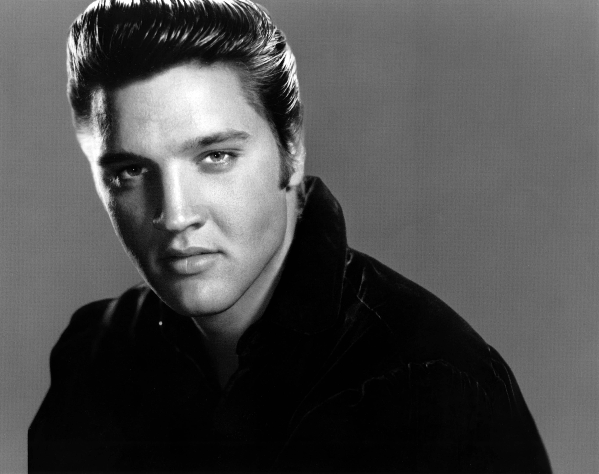

Grandes Artistas da Música
Ao longo da história, diversos artistas marcaram a música mundial com seus talentos, estilos e contribuições. Cada um deles ajudou a transformar a indústria musical e influenciou gerações com suas obras. Conheça alguns dos artistas mais importantes da música.
1. Michael Jackson

Gênero musical: Pop.
Origem: Estados Unidos.
Biografia: Michael Jackson foi
um cantor, compositor e dançarino conhecido
mundialmente como o Rei do Pop. Iniciou sua carreira
ainda criança no grupo Jackson 5 e depois construiu
uma carreira solo de enorme sucesso.
Contribuição: Revolucionou os
videoclipes, as apresentações musicais e a cultura
pop. Seu álbum Thriller se tornou um dos mais
conhecidos da história.
2. Freddie Mercury

Gênero musical: Rock.
Origem: Nascido em Zanzibar.
Biografia: Freddie Mercury foi
vocalista da banda Queen e ficou conhecido por sua
voz marcante e presença de palco. Foi responsável
por interpretar grandes sucessos da banda.
Contribuição: Tornou-se um dos
maiores nomes da história do rock, participando
da criação de músicas famosas como Bohemian
Rhapsody e We Are the Champions.
3. Bob Marley

Gênero musical: Reggae.
Origem: Jamaica.
Biografia: Bob Marley foi um
cantor e compositor jamaicano que ajudou a
popularizar o reggae pelo mundo. Suas músicas
transmitiam mensagens de paz, união e igualdade.
Contribuição: Levou a cultura
jamaicana e o reggae para diversos países,
tornando-se um dos maiores representantes
desse gênero musical.
4. Tupac Shakur
Gênero musical: Hip-Hop e Rap.
Origem: Estados Unidos.
Biografia: Tupac Shakur foi
um rapper e ator norte-americano. Ficou conhecido
por suas letras que abordavam questões sociais,
desigualdade, dificuldades da população e
experiências da vida urbana.
Contribuição: Tornou-se uma
das figuras mais influentes da história do
hip-hop, deixando um importante legado para
o rap mundial.
5. Miles Davis

Gênero musical: Jazz.
Origem: Estados Unidos.
Biografia: Miles Davis foi
um trompetista e compositor norte-americano.
Ficou conhecido por sua criatividade e por
experimentar diferentes estilos musicais
ao longo de sua carreira.
Contribuição: Foi um dos
músicos mais importantes da história do jazz,
participando do desenvolvimento de diferentes
movimentos dentro do gênero.
6. Elvis Presley

Gênero musical: Rock and Roll.
Origem: Estados Unidos.
Biografia: Elvis Presley foi
um cantor e ator norte-americano conhecido
como o Rei do Rock. Ganhou fama na década de
1950 e conquistou milhões de fãs com sua voz
e estilo musical.
Contribuição: Ajudou a
popularizar o rock and roll mundialmente,
influenciando diversos artistas das gerações
seguintes.